FinTrust Digital Bank
Business & Data Intelligence Assessment
The supplied Week 1 document focuses on understanding and planning: business objectives, dataset relationships, analytical questions, KPI definitions, dashboard wireframe and the initial analysis plan. The gallery below adds the supplied analysis and dashboard evidence.
Scope & guidelines
The document explicitly defines Week 1 as understanding and planning rather than final dashboard delivery.
Business understanding
Understand the FinTrust business problem and objectives.
Data understanding
Review the available datasets and their relationship.
Analytical questions
Identify meaningful questions and define KPIs required to answer them.
Dashboard planning
Create a wireframe showing sections, KPI cards, charts and filters.
Business understanding
Questions and decisions supported by the Week 1 assessment.
Business questions
- How active are customers across segments and account types?
- Which transaction types generate the highest volume and value?
- Which channels are most heavily used and valuable?
- How do transaction outcomes vary by channel, type and location?
- What patterns are associated with transactions flagged for risk review?
- How do international transactions compare with domestic transactions?
- Which customer, geographic or channel groups require closer monitoring?
Decisions supported
- Monitor transaction performance and exceptions.
- Support channel and customer-service planning.
- Identify areas requiring risk or operational investigation.
- Improve management reporting through consistent KPIs.
- Support data-driven decisions using customer and transaction evidence.
Stakeholders
Senior Management · Operations Teams · Risk & Compliance · Customer Experience / Digital Teams · Finance / Business Teams · Data & Analytics Teams
Data understanding & profiling
Customer_ID is the common relationship key. The document recommends using Customer_ID rather than Customer_Name because names are not unique.
| Dataset | Records | Columns | Purpose |
|---|---|---|---|
| FinTrust Transaction Data | 12,000 | 11 | Transactions, value, channels, status and risk. |
| FinTrust Customer Data | 1,500 | 12 | Customer demographics, segments, accounts and engagement. |
Transaction fields
- Transaction_ID
- Customer_ID
- Transaction_DateTime
- Transaction_Type
- Amount_NGN
- Channel
- Device_Type
- Location
- International_Transaction
- Transaction_Status
- Risk_Review_Flag
Customer fields
- Customer_ID
- Customer_Name
- Age
- Gender
- City
- Customer_Segment
- Account_Type
- Tenure_Months
- Digital_Engagement_Score
- Monthly_Income_Band
- Preferred_Channel
- Account_Status
Analytical questions
The document groups the planned analysis into six areas.
Customer Behaviour
Which customer segments and account types contribute the most activity and value?
Transaction Activity
How does transaction volume change over time and by transaction type?
Transaction Value
Where are high-value transactions concentrated?
Channel Performance
Which channels generate the most usage and value, and how do success rates compare?
Transaction Status
What proportion of transactions are successful, failed, reversed or pending?
Risk Patterns
How do risk-review flags vary by transaction type, location and international status?
KPI definition
The Week 1 KPI table defines what each measure means, why it matters and the required source data.
| KPI | Definition | Why it matters | Required data |
|---|---|---|---|
| Total Transactions | Count of transactions | Measures activity | Transaction_ID |
| Total Transaction Value | Sum of Amount_NGN | Measures value processed | Amount_NGN |
| Average Transaction Value | Average Amount_NGN | Shows typical transaction size | Amount_NGN |
| Success Rate | Successful ÷ total | Monitors performance | Transaction_Status |
| Failed + Reversed Rate | Failed + reversed ÷ total | Tracks exceptions | Transaction_Status |
| Risk Review Rate | Risk-flagged ÷ total | Monitors review exposure | Risk_Review_Flag |
| International Transaction Rate | International ÷ total | Measures cross-border activity | International_Transaction |
| Active Customer Coverage | Customers represented ÷ total customers | Shows customer activity coverage | Customer_ID |
Dashboard wireframe & plan
The project defines the dashboard structure, filters, KPI row and analytical visuals. The implemented dashboard is shown below alongside the planned layout.
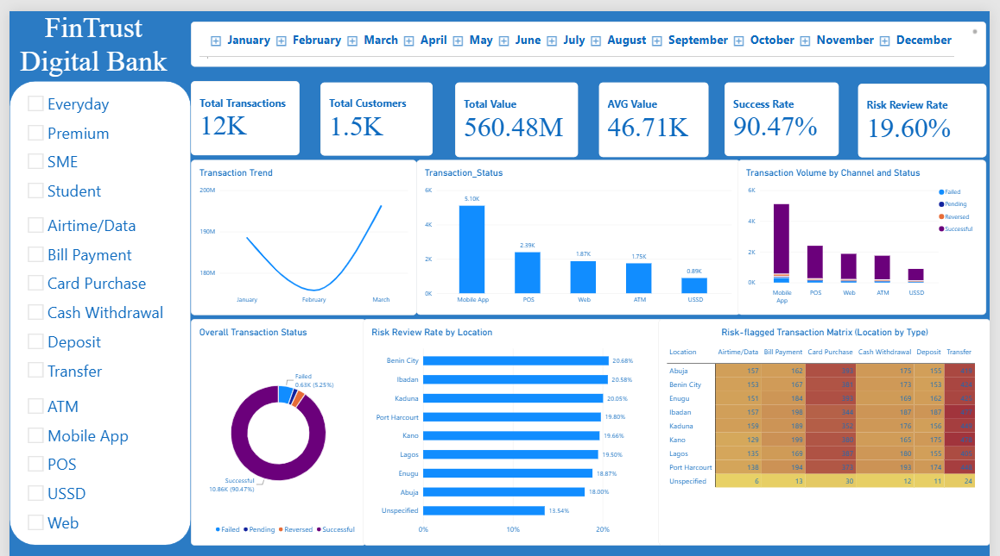
The dashboard brings together transaction trend, transaction status, channel performance, overall status, risk-review rate by location and a risk-flagged transaction matrix. The image is included as the visual realization of the dashboard plan.
Executive KPI Row
KPI cards for headline activity, value, success and risk measures.
Transaction Trend
Line chart to show activity over time.
Transaction Type
Bar/column chart to compare transaction types.
Channel Performance
Compare usage, value and success by channel.
Customer Analysis
Compare segments and account types.
Geographic Analysis
Compare activity/value by location, using a map if appropriate.
Status & Risk
Stacked bar or matrix for outcomes and risk patterns.
Initial analysis plan & tools
The plan moves from validation and integration through KPI calculation, analysis, dashboard development, validation and documentation.
| Step | Activity | Planned work |
|---|---|---|
| 1 | Validate structure | Confirm keys, types, completeness and relationships. |
| 2 | Integrate data | Connect transactions and customers using Customer_ID. |
| 3 | Prepare fields | Create month/week/day and other analytical fields. |
| 4 | Calculate KPIs | Build consistent transaction, value, status and risk measures. |
| 5 | Customer analysis | Compare segments, accounts and digital engagement. |
| 6 | Channel/status analysis | Compare channels and transaction outcomes. |
| 7 | Risk/geographic analysis | Investigate flags by type, location and international status. |
| 8 | Build dashboard | Develop the planned interactive dashboard in the selected BI tool. |
| 9 | Validate | Reconcile dashboard figures against source analysis. |
| 10 | Document insights | Present findings and management implications clearly. |
The dashboard is shown here as the visual outcome connected to the planned validation, KPI calculation, customer, channel, status and risk analysis steps.
SQL analysis & evidence
Each SQL image is placed beside the analytical question or KPI it supports. The explanations follow the project's business questions and KPI definitions.
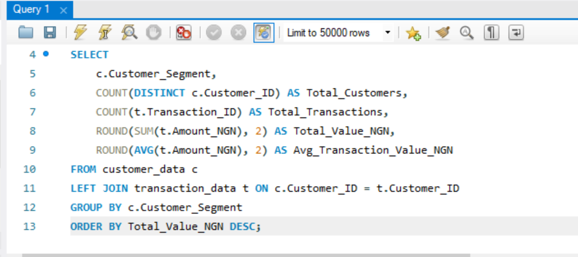
SQL 1 · Customer segment analysis
Joins customer and transaction data through Customer_ID, then groups activity by Customer_Segment. It counts customers and transactions and calculates total and average transaction value. This addresses which customer segments contribute the most activity and value.
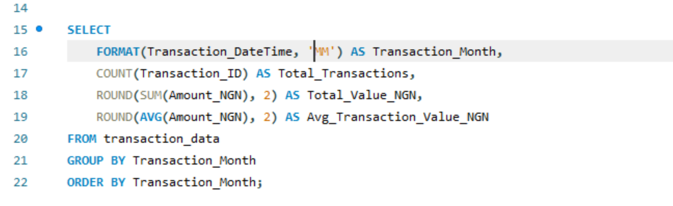
SQL 2 · Monthly transaction trend
Groups transactions by month and calculates total transactions, total transaction value and average transaction value. This supports the transaction-activity question about how volume and value change over time.
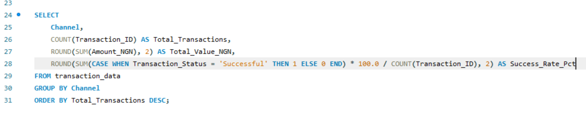
SQL 3 · Channel performance
Groups transactions by Channel and measures transaction volume, total value and Success Rate. This directly supports the channel-performance question and helps compare usage, value and success across channels.
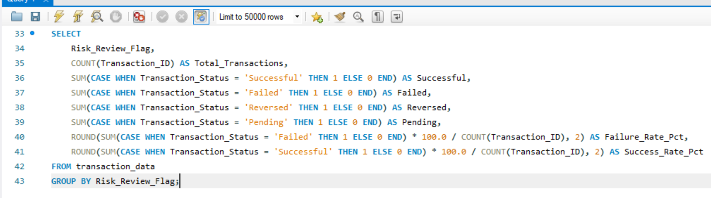
SQL 4 · Risk-review status analysis
Groups records by Risk_Review_Flag and counts successful, failed, reversed and pending outcomes. It also calculates failure and success rates. This supports investigation of transaction outcomes associated with risk-review flags.
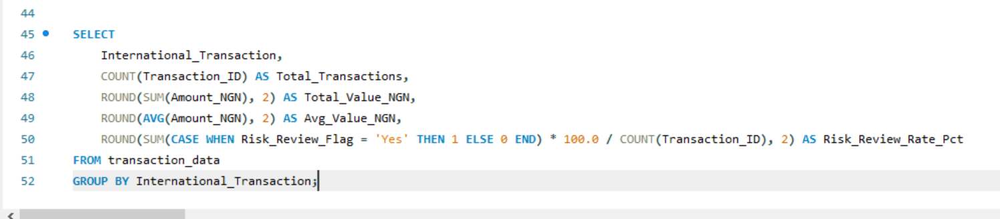
SQL 5 · International vs domestic analysis
Groups transactions by International_Transaction and calculates volume, total value, average value and risk-review rate. This addresses the question of how international transactions compare with domestic transactions.
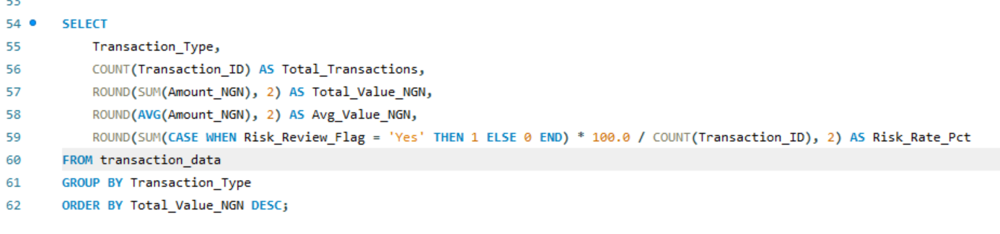
SQL 6 · Transaction-type risk analysis
Groups transactions by Transaction_Type and measures volume, value, average value and risk rate. It supports the analysis of which transaction types generate the most activity and value and where risk exposure is concentrated.
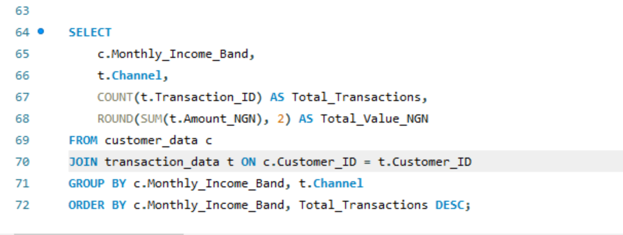
SQL 7 · Income band and channel analysis
Joins customer income bands with transaction channels, then compares transaction volume and value. This supports customer and channel planning by showing how channel behaviour differs across income bands.
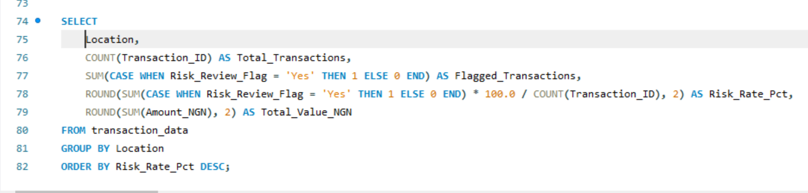
SQL 8 · Location risk analysis
Groups transactions by Location and calculates transaction volume, flagged transactions, risk rate and total value. This supports the geographic-risk question and identifies locations requiring closer monitoring.
FinTrust evidence gallery
Every supplied FinTrust image is included. Captions explain what each image demonstrates in the context of the project plan and subsequent evidence.
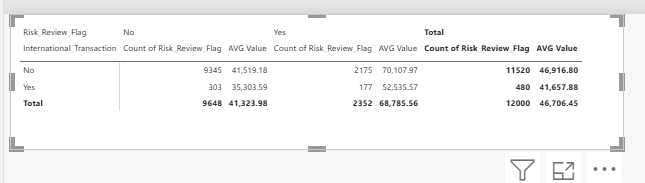
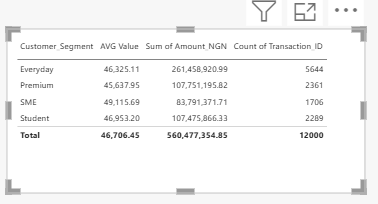
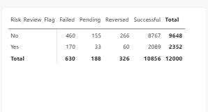
.png)
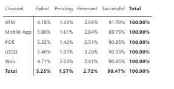
.png)